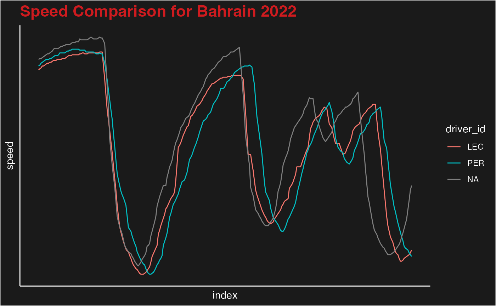

f1dataR serves as a tool to get neatly organized Formula 1 data into your R environment. Here we will go over the basic functions to understand how the package works.
The most sought-after aspect of F1 data is telemetry data. Let’s get Leclerc’s fastest lap from the first race of 2022:
library(f1dataR)
#> Loading required package: reticulate
load_driver_telemetry(2022, 1, driver = 'LEC', fastest_only = T)
#> # A tibble: 706 × 19
#> date session_time driver_ahead distance_to_driver_ahead
#> <dttm> <dttm> <chr> <dbl>
#> 1 2022-03-20 12:30:01 NA "" NaN
#> 2 2022-03-20 12:30:01 NA "" NaN
#> 3 2022-03-20 12:30:01 NA "" NaN
#> 4 2022-03-20 12:30:01 NA "" NaN
#> 5 2022-03-20 12:30:01 NA "" NaN
#> 6 2022-03-20 12:30:01 NA "" NaN
#> 7 2022-03-20 12:30:02 NA "" NaN
#> 8 2022-03-20 12:30:02 NA "" NaN
#> 9 2022-03-20 12:30:02 NA "" NaN
#> 10 2022-03-20 12:30:02 NA "" NaN
#> # ℹ 696 more rows
#> # ℹ 15 more variables: time <dttm>, rpm <dbl>, speed <dbl>, n_gear <dbl>,
#> # throttle <dbl>, brake <lgl>, drs <dbl>, source <chr>,
#> # relative_distance <dbl>, status <chr>, x <dbl>, y <dbl>, z <dbl>,
#> # distance <dbl>, driver_code <chr>now let’s use ggplot2 to visualize some of the data we have
library(tidyverse)
#> ── Attaching core tidyverse packages ──────────────────────── tidyverse 2.0.0 ──
#> ✔ dplyr 1.1.2 ✔ readr 2.1.4
#> ✔ forcats 1.0.0 ✔ stringr 1.5.0
#> ✔ ggplot2 3.4.2 ✔ tibble 3.2.1
#> ✔ lubridate 1.9.2 ✔ tidyr 1.3.0
#> ✔ purrr 1.0.1
#> ── Conflicts ────────────────────────────────────────── tidyverse_conflicts() ──
#> ✖ dplyr::filter() masks stats::filter()
#> ✖ dplyr::lag() masks stats::lag()
#> ℹ Use the conflicted package (<http://conflicted.r-lib.org/>) to force all conflicts to become errors
lec <- load_driver_telemetry(2022, 1, driver = 'LEC', fastest_only = T) %>%
head(300)%>%
mutate(index = 1:300,
driver_id = "LEC")
ggplot(lec, aes(index, throttle))+
geom_line()+
theme_minimal()What if we get more drivers involved. Let’s also get the Qualifying data from Hamilton
ham <- load_driver_telemetry(2022, 1, 'Q', driver = 'HAM', fastest_only = T) %>%
head(300) %>%
mutate(index = 1:300,
driverId = "HAM")
per <- load_driver_telemetry(2022, 1, driver = 'PER', fastest_only = T) %>%
head(300)%>%
mutate(index = 1:300,
driver_id = "PER")
data <- bind_rows(lec,ham,per)
ggplot(data, aes(index, throttle, color = driver_id))+
geom_line()+
theme_minimal()
Now lets visualize speed and use the f1 dark theme for ggplot included in the package
ggplot(data, aes(index, speed, color = driver_id))+
geom_line()+
theme_dark_f1()+
theme(
axis.title = element_text(),
axis.line = element_line(color = 'white'),
)+
labs(
title = "Speed Comparison for Bahrain 2022"
)We can also use one of the plotting functions included in the package.
plot_fastest(2022, 1, 'R', 'PER')
#> If the session has not been loaded yet, this could take a minute